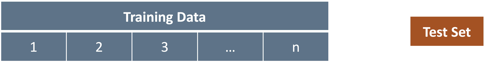
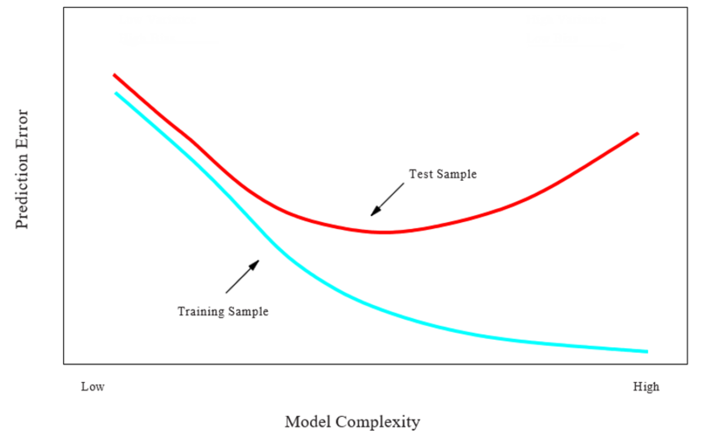
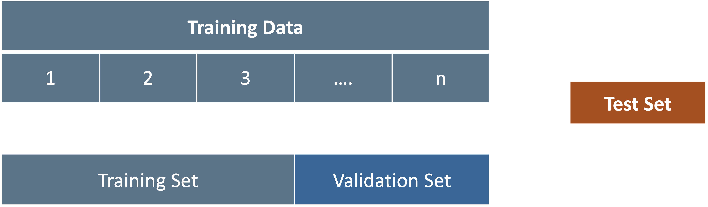
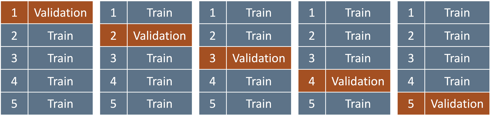

Fundamentals of
Data Analytics and
Predictions
Cross Validation
Xi (Rossi) LUO
Department of Biostatistics and Data Science
School of Public Health
The University of Texas Health Science Center at Houston
Model Assessment
- So far, we learned about methods in regression and classification for making predictions on our
data
- How do we test these methods?

Training vs. Test Error—1
- Recall the distinction between the test error and the training error:
- Test error is the average error that results from using a statistical learning method to
predict the response on a new observation, one that was not used in training the method
- Training error is calculated by applying the statistical learning method to the observations
used in its training
- The training error rate often underestimates the test error rate
Training vs. Test Error—2

Prediction-Error Estimate
- Estimate the test error by holding out a subset of the training observations from the fitting
process, and then applying the statistical learning method to those held out observations

K-fold Cross-Validation—1
- Instead of a single 50/50 split,
- Divide data into K equal-sized parts (K=5 here)
- Train using parts (2, 3, 4, and 5) combined, validate on 1
- Repeat 5 times each with different validation part

K-fold Cross-Validation—2
- Widely used approach for estimating test error
- Estimates can be used to select best model, and to give an idea of the test error of the final
chosen model
- Idea is to randomly divide the data into K equal-sized parts. We leave out part k, fit the model
to the other K − 1 parts (combined), and then obtain predictions for the left-out kth part
- This is done in turn for each part k = 1, 2, . . . K, and then the results are combined
Leave-One Out Cross-Validation
- Setting K=n yields n-fold or leave-one out cross-validation (LOOCV)
- Sometimes useful, but typically doesn’t shake up the data enough
- The estimates from each fold are highly correlated and hence their average can have high
variance
- A better choice is K=5 or 10
Benefits of Cross-Validation
- Avoid random (lucky/unlucky) single split
- Each example will be in the training set exactly once: each example is in one of the folds,
and each fold is in the test set once
- Tells us how sensitive our model is to the selection of the training dataset
- Use our data more effectively
- 5-fold, in each iteration we can use four-fifths of the data (80%) to fit the model
- 10-fold, we can use nine-tenths of the data (90%) to fit the model
Issues with Cross Validation
- Since each training set is only (K − 1)/K as big as the original training set, the estimates of
prediction error will typically be biased upward
- This bias is minimized when K = n (LOOCV), but this estimate has high variance
- K = 5 or 10 provides a good compromise for this bias-variance tradeoff
- Computational cost